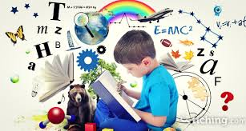

Retos 16-20
Tema no.16 Tomar responsabilidad por el aprendizaje
Definicion breve: Es hacerse cargo de lo que uno aprende. No esperar que el profe lo haga todo, sino que uno tambien estudia, pregunta, busca y se esfuerza por aprender mas.
Como se aplica en la vida real: Un estudiante que se pone a investigar en internet o a repasar sin que nadie le diga, esta tomando responsabilidad. Tambien alguien que va a un curso por su cuenta o practica lo que no le sale bien.
Con que temas se relaciona y por que: Con aprender por investigacion, porque para investigar hay que tener ganas de aprender. Tambien con reflexionar y evaluar, porque uno mejora cuando se da cuenta en que falla.
#
Tema no.17 Reflexionar y evaluar
Definicion breve: Es pensar que se hizo bien o mal y ver como se puede mejorar. No solo sacar una nota y ya, sino ver que se aprendio de verdad y que falta reforzar.
Como se aplica en la vida real: Despues de hacer un examen o entregar un trabajo, uno puede ver que errores tuvo y tratar de corregirlos. O si algo salio bien, ver por que salio asi y repetirlo.

Con que temas se relaciona y por que: Con tomar responsabilidad del aprendizaje, porque si uno no reflexiona, no mejora. Y con los proyectos educativos, que necesitan evaluarse para ver si estan funcionando o no.
#
Tema no.18 Aprender a traves de la investigación
Definicion breve: Es aprender haciendo preguntas, buscando, probando, entrevistando, investigando. No solo leer lo del libro, sino ir mas alla para entender las cosas mejor.
Como se aplica en la vida real: Un estudiante que hace un experimento o busca informacion para un trabajo de clase, esta aprendiendo asi. Tambien un emprendedor que investiga su mercado antes de vender.
Con que temas se relaciona y por que: Con tecnologias digitales, porque ahora investigar es mas facil con internet. Y con tomar responsabilidad, porque investigar requiere interes y esfuerzo personal.
#
Tema no.19 Sinergia
Sinergia es la acción conjunta de dos o más elementos que produce un efecto mayor que la suma de sus efectos individuales.
Aplicación en la vida real: La sinergia se aplica en la vida real cuando varias personas, equipos o elementos trabajan juntos y logran mejores resultados que si actuaran por separado. Se ve en el trabajo en equipo, en las familias, en empresas y en la naturaleza, donde la colaboración multiplica la eficacia y el impacto.
Con que temas se relaciona y por que: Habilidad transferible y la sinergia:La sinergia es una habilidad transferible porque puede aplicarse en distintos contextos, como el trabajo, la escuela o la comunidad, fomentando la colaboración para lograr mejores resultados sin importar el entorno.
Valores personales, familiares y corporativos y la sinergia: La sinergia refleja valores como el respeto, la cooperación y la responsabilidad, que son fundamentales tanto en la vida personal y familiar como en el entorno corporativo para alcanzar objetivos comunes.
#
Tema no.20 Hábilidad transferible
Definicion breve: Una habilidad transferible es una capacidad que se puede aplicar en diferentes áreas o situaciones, como el trabajo, la escuela o la vida cotidiana.
Como se aplica en la vida real: Se aplica cuando una persona usa la misma habilidad en distintos contextos. Por ejemplo, saber comunicarte bien te sirve tanto para exponer en clase como para resolver conflictos en el trabajo o en la familia. Habilidades como el liderazgo, el trabajo en equipo o la resolución de problemas son útiles en cualquier entorno.
Con que temas se relaciona y por que: Sinergia y la habilidad transferible: La sinergia es una habilidad transferible porque puede aplicarse en distintos ámbitos como el trabajo, la escuela o la comunidad, permitiendo que las personas colaboren eficazmente y logren mejores resultados juntos que por separado.
Valores personales, familiares y corporativos y habilidad transferible: La habilidad de transferir valores como el respeto, la empatía y la responsabilidad permite adaptarse a diferentes entornos, fortaleciendo relaciones y promoviendo una convivencia armónica tanto en lo personal como en lo profesional.